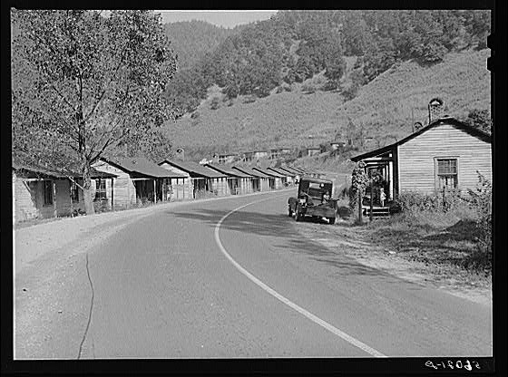

Instructions: Your 'City Research' sub-page should include a list that answers the questions shown below in the example. You should also include a historical picture of your assigned city and a picture of at least one physical feature.

City, State, Country: Virgie, Kentucky, USA
Continent: North America
Currency (Name of Money): US Dollar
Language Spoken: English
1 Push Factor (makes people want to leave): Lack of employment.
1 Pull Factor (makes people want to go there): The cost of living is cheap.
What is the City Known For?- at least 2 facts: Coal mining and sports.
Developed or Developing Country? Developed
Physical features of city (e.g., mountains, rivers, etc.): Mountains, Shelby Creek, and hollers.
What led to the creation of the city? The city was founded as a coal camp for a local coal operation.